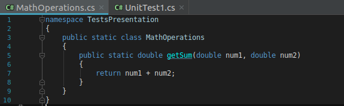
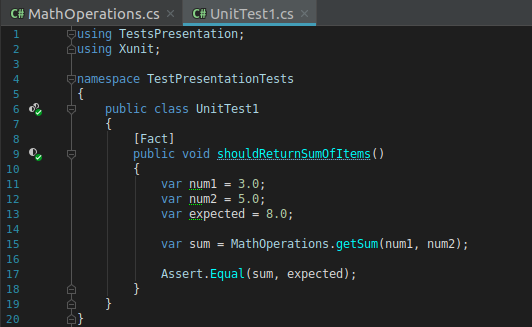
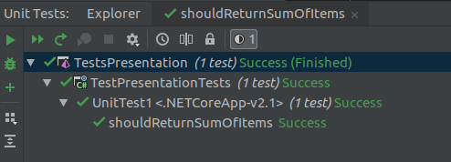

Ogólne kategorie testów oprogramowania:
Testowanie białoskrzynkowe i czarnoskrzynkowe
Testowanie dynamiczne i statyczne
Testowanie funkcjonalne i niefunkcjonalne
Testowanie manualne i automatyczne
Czarna skrzynka - jedyne do czego mamy dostęp to wyprowadzone interfejsy użytkowania
Biała skrzynka - mamy dostęp do wiedzy wykraczającej poza to, co jest nam znane
z poziomu interfejsów.
Posiadamy wiedzę o tym jak skonstruowane jest oprogramowanie, tzn. o zastosowanych
algorytmach, bibliotekach, kodzie źródłowym, bazie danych itd.
Testy statyczne - nie wymagają uruchamiania oprogramowania, wspierają weryfikację, wymagają wiedzy z zakresu budowy, technologii, języków oprogramowania . Z reguły koszt znalezienia i naprawy błędu jest niższy.
Testy dynamiczne - wymagają uruchomienia oprogramowania, wspierają walidację, wymagają zaprojektowania przypadków testowych. Z reguły koszt znalezienia i naprawy błędu jest wyższy.
Testy funkcjonalne - Testowanie funkcjonalne jest sprawdzeniem funkcji oprogramowania. Testujemy więc co dane oprogramowanie ma robić w danej sytuacji oraz jakie są oczekiwane odpowiedzi systemu na dane działania użytkownika.
Testy niefunkcjonalne - to wszystkie testy, które nie są testami funkcjonalnymi :)
... tzn. testujemy nie funkcje a atrybuty systemu, takie jak:
Szybkość
Przyjazność interfejsów
Niezawodność działania
Skalowalność
Efektywność (wydajność / zużycie zasobów)
Utrzymywalność / przenaszalność
Testy manualne:
Z reguły nie wymagają wiedzy z zakresu programownaia
Kosztowne w przeprowadzaniu
Wolne w przeprowadzaniu
Są narażone na błędy ludzkie
Najczęściej są podstawą do wykonania testów automatycznych
Testy automatyczne:
Wymagają wiedzy z zakresu programownaia
Kosztowne w implementacji (?)
Tanie w przeprowadzaniu
Szybkie w przeprowadzaniu
Są wykonywane przez maszyne, a więc wolne od ludzkich błędów
Głównie nastawione na wykrywanie regresji
Testy "end to end"
Testy jednostkowe
Testy integracyjne
Testy end-to-end są testami akceptacyjnymi, które zapewniają, że aplikacja spełnia oczekiwania użytkownika.
Testują one całą funkcjonalność od początku do końca (end to end), symulują zachowanie użytkowników i najczęściej testują też UI.
Frameworki do automatycznych testów UI:
Selenium
Cypress
Appium
Ranorex
Testy te powinny testować pojedynczą “jednostkę” kodu (powinny być więc atomowe). Są “najtańsze“. Oznacza to, że wykonywanie ich jest bardzo szybkie, ponieważ nie testują one komponentów graficznych oraz integracji z innymi systemami, co związane jest z przygotowaniem odpowiednich środowisk. Testy te uruchamiane są w izolacji, oznacza to, że nie są w żaden sposób związane z innymi elementami systemu.
Frameworki do testów jednostkowych:
Przykład testu jednostkowego
Testowana metoda:
Test jednostkowy:
Wynik testu jednostkowego:
Testy integracyjne odgrywają pomocniczą rolę. To wyspecjalizowany typ testów, koncentrujący się na punktach połączeń z zasobami zbyt „ciężkimi” dla testów jednostkowych, ale mającymi zbyt wiele przypadków brzegowych by móc być w pełni pokryte przez testy end-to-end.
Czym jest TDD ?
TDD to podejście do tworzenia oprogramowania, które zakłada, że przed napisaniem właściwej funkcjonalności programista zaczyna od utworzenia testu. Test ten powinien testować funkcjonalność, którą dopiero chcemy napisać.
Jak to wygląda w praktyce?
TDD to podejście, które składa się z trzech faz. Te trzy fazy łączą się w cykl. Cały proces pisania kodu składa się z właśnie takich cykli, które powtarzasz jeden po drugim.
Cykl to trzy fazy:
Faza red
Faza green
Refactor
Faza red
Pierwszym krokiem jest napisanie testu. Test ten nie może się powieść, ponieważ sama funkcjonalność jeszcze nie jest zaimplementowana.
Faza green
Kolejnym krokiem jest napisanie kodu, który implementuje brakującą funkcjonalność. W tym momencie istotne jest to aby ten kod nie był „idealny”. Chodzi o możliwe jak najszybszą implementację, która spełnia założenia testu, który był napisany w poprzedniej fazie.
Refactor
Refaktoryzacja (ang. refactor) to proces, w którym zmieniamy kod w taki sposób, że nie zostaje zmieniona jego funkcjonalność. Mówi się o „oczyszczaniu” kodu, doprowadzaniu go do lepszego stanu.
Przykładem refaktoryzacji może być wydzielenie oddzielnej metody, która usuwa powielony kod czy stworzenie zupełnie nowej klasy odpowiedzialnej za pewną część zadań danej klasy.
Dokładne zrozumienie wymagań dokumentacji. Testy piszemy zawsze względem dokumentacji.
Testy mogą służyć jako zawsze aktualna dokumentacja oprogramowania
Natychmiastowy i automatyczny feedback na temat błędu w kodzie.
Krótszy, całkowity, czas procesu developmentu.
Dużo mniej ręcznego debugowania.
Czas i wysiłek na trening i przygotowanie developerów.
Potrzeba dyscypliny osobistej i zespołowej.
Początkowa percepcja dłuższego czasu developmentu.
Przeprowadzić cykl TDD dla poniższego zadania:
Zaimplementuj metodę, która będzie sortować rosnąco tylko liczby nieparzyste znajdujące się w tablicy.
Przykład:
sortArray([5, 3, 2, 8, 1, 4])
Wynik:
[1, 3, 2, 8, 5, 4]